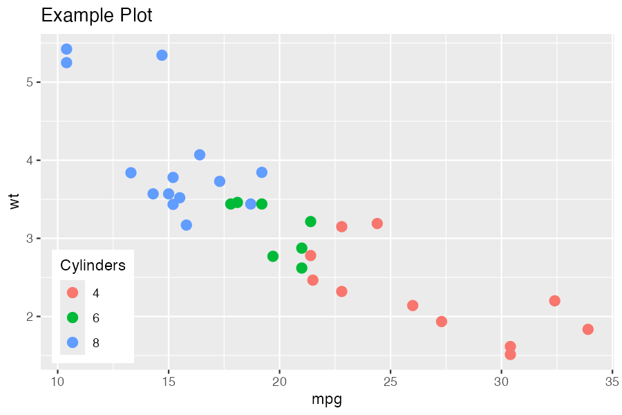
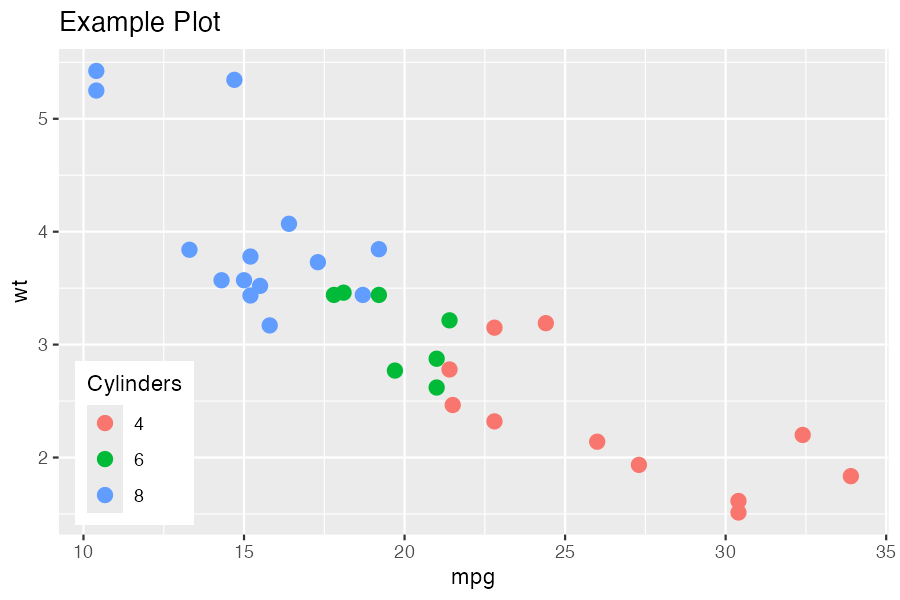
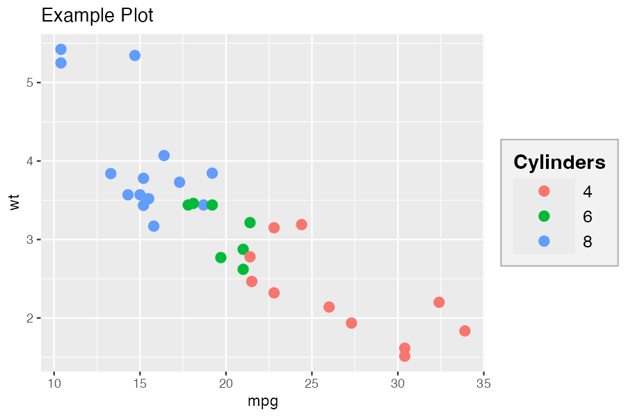
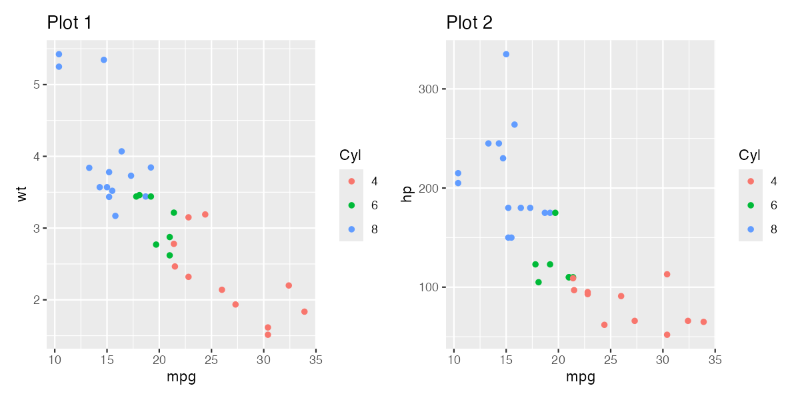
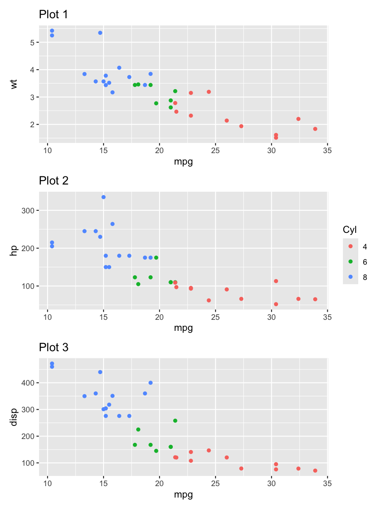
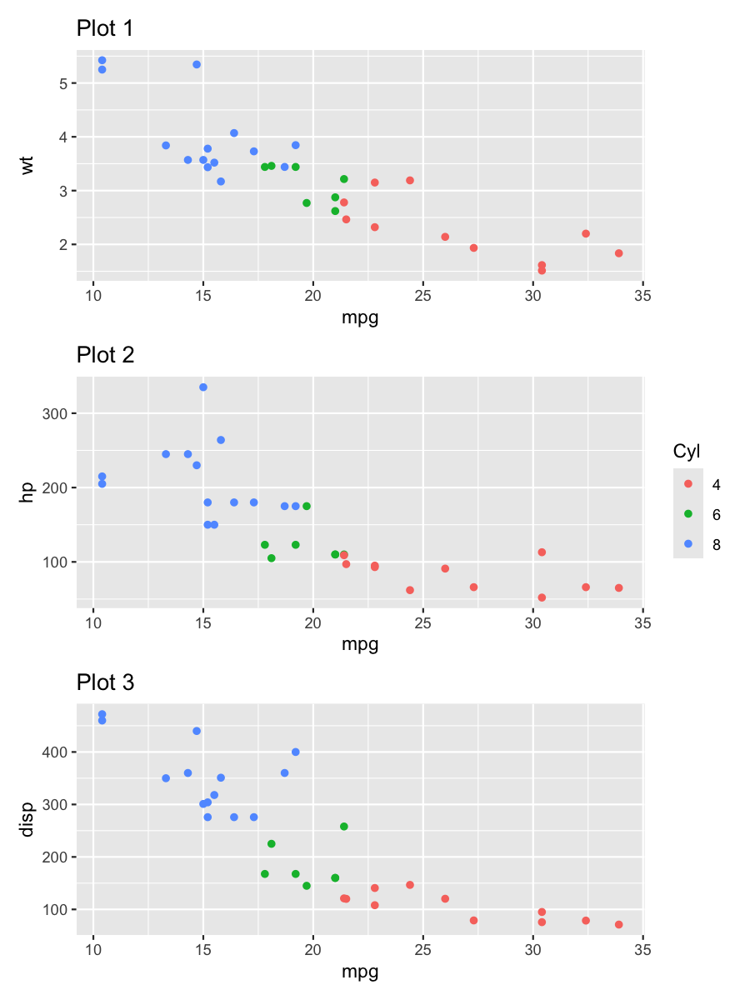
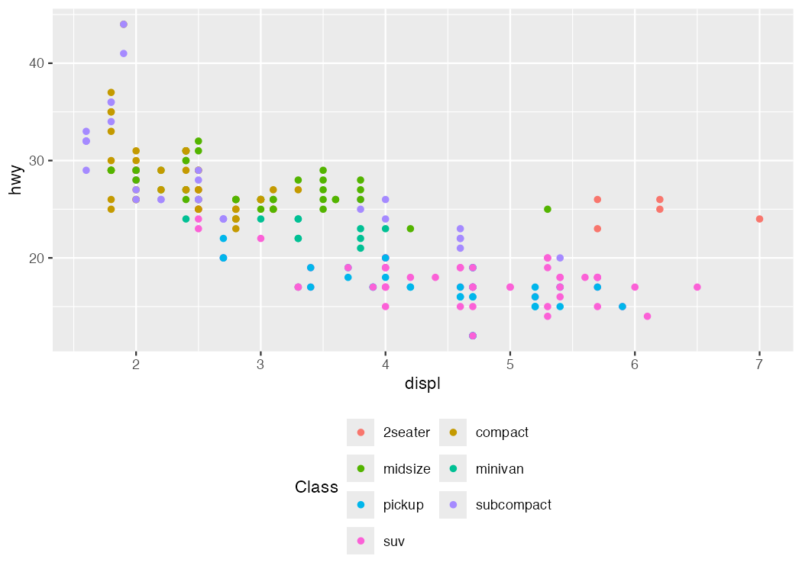

Simplified legend and guide alignment for ggplot2.
Installation
# install.packages("remotes")
remotes::install_github("gcol33/ggguides")Overview
ggguides provides one-liner functions for common legend operations in ggplot2:
-
Position:
legend_left(),legend_right(),legend_top(),legend_bottom(),legend_inside(),legend_none() -
Direction:
legend_horizontal(),legend_vertical() -
Style:
legend_style(),legend_wrap(),legend_reverse() -
Patchwork:
collect_legends(),align_guides_h()
Examples
Position Helpers
library(ggplot2)
library(ggguides)
p <- ggplot(mtcars, aes(mpg, wt, color = factor(cyl))) +
geom_point(size = 3) +
labs(color = "Cylinders")
legend_left() / legend_right()
Position with proper alignment (sets justification and box.just together):
p + legend_left()
p + legend_right()

legend_top() / legend_bottom()
Horizontal layout with optional plot alignment:
p + legend_top()
p + legend_bottom()
# Align to full plot (useful with titles)
p + labs(title = "My Title") + legend_top(align_to = "plot")

legend_inside()
Position inside the plot using coordinates or shortcuts:
# Using shortcuts
p + legend_inside(position = "topright")
p + legend_inside(position = "bottomleft")
# Using coordinates
p + legend_inside(x = 0.95, y = 0.95, just = c("right", "top"))
# With custom styling
p + legend_inside(position = "center", background = "grey95", border = "grey50") 

Style Helpers
legend_style()
Comprehensive styling in one call:
# Change font size - affects both title and labels
p + legend_style(size = 14)
# Change font family
p + legend_style(family = "serif")
p + legend_style(family = "mono")
# Combine size and family
p + legend_style(size = 14, family = "serif")

# Full styling with title emphasis
p + legend_style(
size = 12,
title_size = 14,
title_face = "bold",
key_width = 1.5,
background = "grey95",
background_color = "grey70",
margin = 0.3
)
legend_wrap()
Wrap legend entries into columns or rows:
ggplot(mpg, aes(displ, hwy, color = class)) +
geom_point() +
legend_wrap(ncol = 2)
# Or by rows
ggplot(mpg, aes(displ, hwy, color = class)) +
geom_point() +
legend_wrap(nrow = 2)


Patchwork Integration
collect_legends()
Collect legends from patchwork compositions:
library(patchwork)
p1 <- ggplot(mtcars, aes(mpg, wt, color = factor(cyl))) +
geom_point() + labs(title = "Plot 1")
p2 <- ggplot(mtcars, aes(mpg, hp, color = factor(cyl))) +
geom_point() + labs(title = "Plot 2")
# Without collection (duplicate legends)
p1 | p2
# With collection
collect_legends(p1 | p2)
# Position at bottom
collect_legends(p1 | p2, position = "bottom")

Height Spanning
For stacked plots, use span = TRUE to make the legend span the full height. Using different plot heights makes the spanning behavior more visible:
library(patchwork)
p3 <- ggplot(mtcars, aes(mpg, disp, color = factor(cyl))) +
geom_point() + labs(title = "Plot 3")
# Stack with different heights: 4, 2, 1
stacked <- (p1 / p2 / p3) + plot_layout(heights = c(4, 2, 1))
# Default: legend centered
collect_legends(stacked, position = "right")
# With spanning: legend fills full height
gt <- collect_legends(stacked, position = "right", span = TRUE)
grid::grid.draw(gt) 

Row-Specific Attachment
Attach the legend to specific rows instead of spanning all:
# Attach legend to row 1 only (the tallest plot)
gt <- collect_legends(stacked, position = "right", span = 1)
grid::grid.draw(gt)
# Attach legend to rows 1 and 2
gt <- collect_legends(stacked, position = "right", span = 1:2)
grid::grid.draw(gt)

Combining Functions
Functions compose naturally:
ggplot(mpg, aes(displ, hwy, color = class)) +
geom_point() +
legend_left() +
legend_style(size = 12, title_face = "bold", background = "grey95")
ggplot(mpg, aes(displ, hwy, color = class)) +
geom_point() +
legend_wrap(ncol = 2) +
legend_bottom()
cowplot Users
For cowplot, we recommend the lemon package which provides:
-
g_legend()- extract legend as grob -
grid_arrange_shared_legend()- combine plots with shared legend -
reposition_legend()- place legend inside panels
ggguides functions like legend_style(), legend_wrap(), and position helpers work on individual plots regardless of layout package.